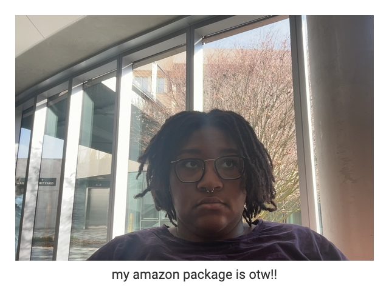
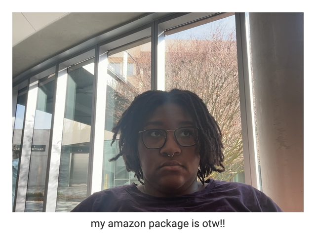
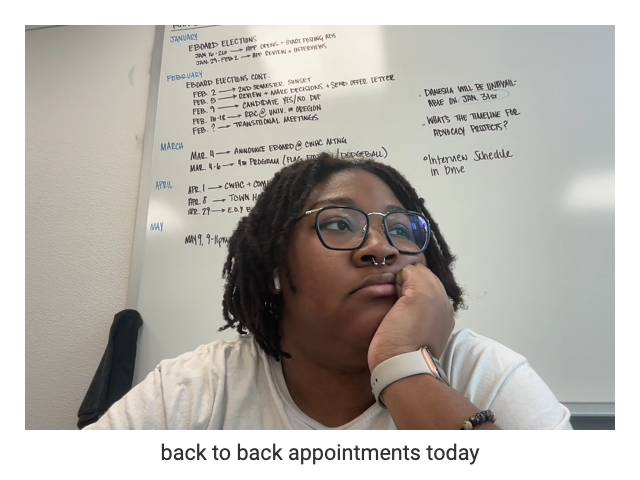
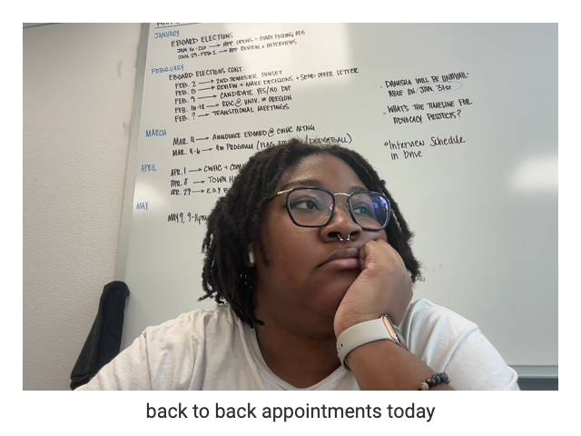

Welcome to Brianna's Feed!
[DRAFT: This will hold text about the feed] 'The Feed' was the first major project created for in ART 272 in Jan-Feb 2024.
The goal of the project was to help learn & practice the basics of HTML/CSS, typesetting for the screen, and this project aimed to create an understanding of the way that digital media and networks play a role in our lives at this time.
This project was partially created using a chrome extension called Glance Back. Glance Back is a chrome extension that acts as a daily photo diary, capturing the moments shared between the user and their computer.
Once a day, when the user opens a new tab, Glance Back will unexpectedly take their photo, ask them what they're thinking about, and save both the photo and written thought to its locally stored archive.
The following photos are the result of approximately a weekof using Glance Back.
here are my reflections
 


 
